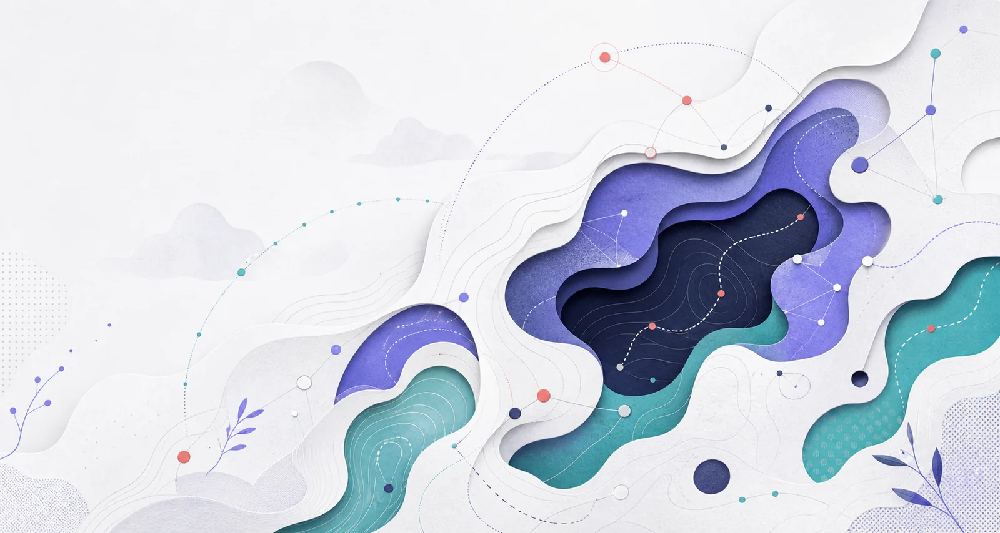
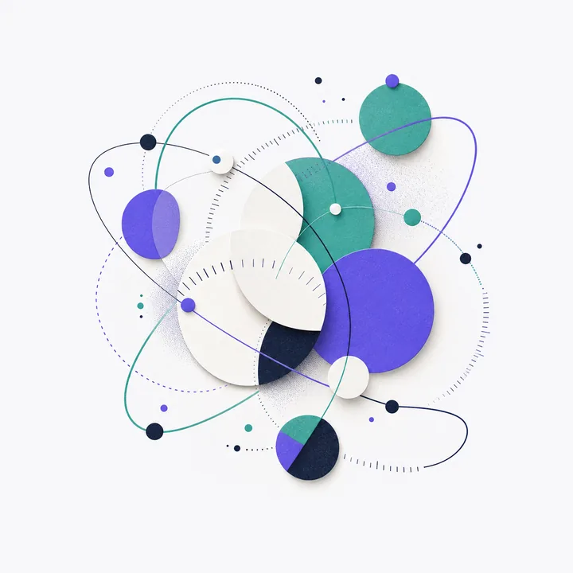

看清依据
每张测试卡都说明理论来源或趣味属性，让你知道结果应该如何理解。
正在校准你的心智图谱
PSYCHOLOGY TEST · 心理测试Mind atlas · 心智探索站
从人格、关系到成长状态，选择一个此刻最想了解的问题。无需登录，完成后立即获得完整结果。

Choose your question
按真实目标选择，而不是先理解一长串测试名称。
Your traces
结果只保存在当前浏览器中。你可以随时回到对应测试查看历史报告。

How to read a result
每张测试卡都说明理论来源或趣味属性，让你知道结果应该如何理解。
回答反映的是此刻的状态。把结果放回真实生活，而不是用类型限制自己。
测试无需账号，历史记录存放在你的设备中，清理浏览器数据也会删除记录。
Open collection
有好的测试创意，或愿意一起完善题目与体验？欢迎加入这个开放项目。